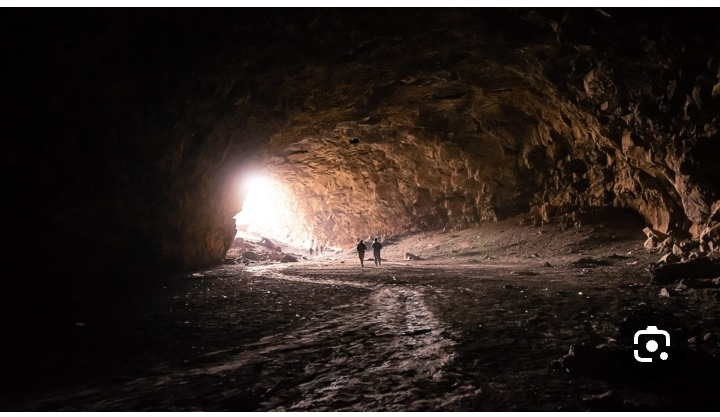
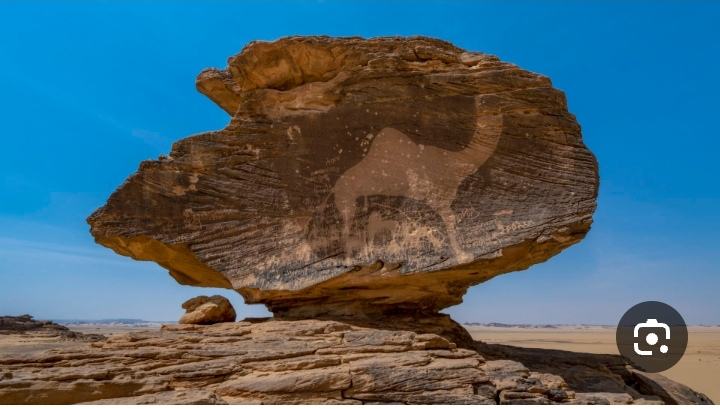

Recent Archaeological Discoveries


Audio report about the discovery
Umm Jirsan Cave
Umm Jirsan Cave is considered one of the most important recent archaeological discoveries in the Kingdom, located in the volcanic lava fields north of Medina.
The cave extends more than 1.5 kilometers and contains large quantities of human and animal bones dating back thousands of years, making it one of the largest mass graves in the Middle East.
Preliminary studies indicate that the site dates back to the Neolithic period and was used as a mass grave for several centuries.
This discovery provides new insights into the history of human settlement in the Arabian Peninsula and patterns of life in ancient times. The findings include:
- Human remains showing burial patterns
- Animal bones indicating domestication practices
- Stone tools from different prehistoric periods
- Evidence of early human adaptation to arid environments
The discovery was made by a joint Saudi-international archaeological team and has been published in several international scientific journals, shedding new light on the prehistory of the Arabian Peninsula.